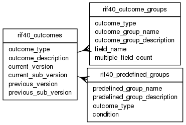

| Table: rif40.rif40_outcomes | |||
| Health Outcomes. This table give the locations of the various Health Outcomes lookup tables, e.g RIF40_ICD10. Outcomes typically supported are ICD 9, 10, OPCS4 operation codes, ICD-0 Histology | |||
| Size: medium, Select frequency: medium, Update frequency: medium | |||
| Columns | |||
| Name | Type | Constraints | Description |
| outcome_type | VARCHAR (20) | NOT NULL | Outcome type: ICD, ICD-0 or OPCS |
| outcome_description | VARCHAR (250) | NOT NULL | Outcome Description |
| current_version | VARCHAR (20) | NOT NULL | Current Version, e.g 10 for ICD |
| current_sub_version | VARCHAR (20) | Current Sub Version, e.g. 11th Revision - 2010 | |
| previous_version | VARCHAR (20) | Previous version, e.g. 9 | |
| previous_sub_version | VARCHAR (20) | Previous sub version | |
| Primary key | |||
| Name | Columns | Description | |
| rif40_outcomes_pk | outcome_type | ||
| Incoming foreign keys | |||
| Name | Columns | Referencing table | Description |
| rif40_outcome_groups_type_fk | outcome_type | rif40_outcome_groups | |
| rif40_predefined_type_fk | outcome_type | rif40_predefined_groups | |
| Grants | |||
| Role | Actions | ||
| rif_manager | select, insert, delete, update | ||
| rif40 | select, references, insert, delete, update | ||
| PUBLIC | select | ||
